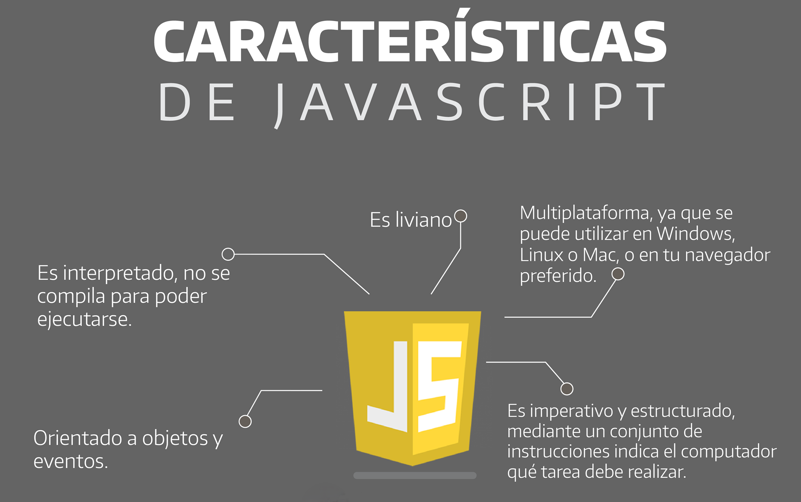

JavaScript es un lenguaje de programación interpretado que se utiliza principalmente para crear páginas web y aplicaciones interactivas, y que permite a los desarrolladores crear interfaces de usuario dinámicas. JavaScript está diseñado para ejecutarse en navegadores web, lo que lo convierte en un lenguaje de scripting del lado del cliente. Esto significa que el código escrito en JavaScript puede ejecutarse directamente en el navegador, sin necesidad de software ni herramientas adicionales.
Una de las principales diferencias entre JavaScript y otros lenguajes de programación es su ejecución. La mayoría de los lenguajes de programación se compilan, lo que significa que el código debe compilarse a un código legible por la máquina antes de ejecutarse. Por otro lado, JavaScript es un lenguaje interpretado, lo que significa que no necesita compilarse para ejecutarse. Esto facilita el trabajo con JavaScript, ya que los desarrolladores no tienen que esperar a que su código se compile para poder probarlo.
Otra diferencia clave entre JavaScript y otros lenguajes de programación radica en su ejecución. Como se mencionó anteriormente, JavaScript está diseñado para ejecutarse en navegadores web y, por lo tanto, es un lenguaje de scripting del lado del cliente. Esto significa que el código escrito en JavaScript se ejecuta en el ordenador del usuario y no en el servidor. Por otro lado, otros lenguajes de programación suelen ejecutarse en el lado del servidor, lo que significa que deben enviarse del servidor al ordenador del usuario antes de poder ejecutarse. Con el tiempo se han creado formas de implementar JavaScript en el lado servidor; por ejemplo, usando Node.js.
JavaScript es un lenguaje de programación orientado a objetos. Esto significa que el código escrito en JavaScript se compone de objetos que contienen datos y funciones. Estos objetos pueden manipularse y utilizarse para crear programas complejos. Por otro lado, muchos otros lenguajes de programación son procedimentales, lo que significa que el código escrito en ellos consiste en una serie de instrucciones que deben seguirse en orden.
Otra diferencia clave entre JavaScript y otros lenguajes de programación es su gestión de los tipos de datos. JavaScript es un lenguaje dinámico, lo que significa que las variables no necesitan declararse con un tipo específico. Esto facilita el trabajo con datos, ya que los desarrolladores no tienen que especificar su tipo al declarar variables. Otros lenguajes de programación suelen tener tipos estáticos, lo que significa que las variables deben declararse con un tipo específico antes de poder usarse.
En conclusión, JavaScript es un lenguaje potente y versátil que ofrece muchas ventajas sobre otros lenguajes de programación. Su naturaleza interpretada facilita su uso y su diseño orientado a objetos permite a los desarrolladores crear programas complejos de forma rápida y sencilla.
JavaScript tiene muchos tipos de datos que podemos almacenar dentro de una variable. Como ya mencionamos en el punto 1, JavaScript es lo que se llama un lenguaje de programación dinámica, por lo que no es necesario declarar con qué tipo de datos vamos a trabajar.
Estos son algunos de los tipos de datos más usados:
El tipo number representa tanto números enteros (integer) como con decimales (float).
var number1 = 123;
var number2 = 123.45;
Un string en JavaScript es una cadena de caracteres, es decir, una palabra o frase, y debe colocarse entre comillas ' o ".
var string1 = "Hola";
var string2 = 'Hola pero con comillas simples';
El tipo boolean tiene sólo dos valores posibles: true y false. Este tipo se utiliza generalmente para almacenar valores de sí/no: true significa "sí"/"verdadero", y false significa "no"/"falso".
var verdadero = true;
var falso = false;
El valor nulo representa la ausencia intencional de cualquier valor de objeto, es un valor "nulo", "vacío", "nada". Podemos asignarlo poniendo simplemente null.
var edad = null;
Si una variable es declarada, pero no asignada, entonces su valor será undefined.
Por ejemplo, si declaramos la variable "edad" pero no le asignamos ningún valor:
var edad;
console.log(edad);
El resultado es:
undefined
El operador "typeof" nos permite comprobar con qué tipo de datos estamos operando.
Podemos usarlo directamente sobre el valor:
typeof 12;
Respuesta:
'number'
O sobre una variable, para comprobar que tipo de dato contiene:
var edad = 12;
typeof edad;
Respuesta:
'number'
JavaScript tiene una lista de funciones o métodos base con una gran variedad de funcionalidades que podemos aplicar a los strings (cadenas). Los strings son un tipo de dato inmutable, por lo que todos los métodos de string producen nuevos strings sin alterar el string original. Si queremos guardar el resultado de la función, tendremos que guardarlo en una nueva variable o asignarlo a la variable del string original.
Por ejemplo:
Aquí creamos una nueva variable:
var string1 = "Hola";
var string2 = string1.funcion();
Y aquí se lo asignamos a la variable del string original:
var string1 = "Hola";
var string1 = string1.funcion();
Estas son algunas de las funciones de string más utilizadas:
Nos devuelve el largo (length) del string, es decir, el número de caracteres que tiene (no index).
var string = "Hola mundo";
var string_nuevo = string.length;
console.log(string_nuevo)
Resultado:
10
Nos devuelve el carácter que está en el número de index que introducimos entre los paréntesis.
var string = "Hola mundo";
var string_nuevo = string.charAt(2);
console.log(string_nuevo)
Resultado:
l
Le añade el contenido que hay entre los paréntesis al string. Funciona parecido a "+".
var string = "Hola mundo";
var string_nuevo = string.concat("!");
console.log(string_nuevo)
Resultado:
Hola mundo!
Repite el contenido del string tantas veces le digas entre los paréntesis.
var string = "Hola mundo";
var string_nuevo = string.repeat(2);
console.log(string_nuevo)
Resultado:
Hola mundoHola mundo
Reemplaza el contenido que está antes de la coma entre los paréntesis, por el que está después de la coma.
var string = "Hola mundo";
var string_nuevo = string.replace("Hola", "Adiós");
console.log(string_nuevo)
Resultado:
Adiós mundo
Sirven para poner el texto del string en mayúscula y minúscula respectivamente.
.toUpperCase():
var string = "Hola mundo";
var string_nuevo = string.toUpperCase();
console.log(string_nuevo)
Resultado:
HOLA MUNDO
.toLowerCase():
var string = "Hola mundo";
var string_nuevo = string.toLowerCase();
console.log(string_nuevo)
Resultado:
hola mundo
Es un tipo de código que nos da una respuesta dependiendo de si una condición es verdadera o falsa.
Para crear un condicional simple, primero pondremos "if", después entre paréntesis pondremos la condición que queremos que se cumpla, y después entre {} e indentado, la respuesta que queremos que tenga en el caso de que se cumpla la condición.
if (condición) {
respuesta
}
Queremos que si el color es "rojo" nos devuelva el texto "El color es rojo", y de no ser así, que no nos devuelva nada.
var color = "rojo";
if (color == "rojo") {
console.log("El color es rojo");
}
Resultado:
El color es rojo
Para crear la condición hemos usado "=="; esto es un operador de comparación, y aquí tenemos algunos que podemos usar con condicionales:
Aunque podamos crear un condicional funcional solo con "if", si queremos crear un condicional más dinámico que nos ofrezca y tenga en cuenta más opciones, podemos combinar "if" con "else if" y/o "else".
if (condición) {
respuesta
} else if (condición) {
respuesta
} else {
respuesta
}
Queremos que responda de formas diferentes dependiendo de si el número es más grande, más pequeño o igual a 10.
var numero = 6;
if (numero > 10) {
console.log("es mayor")
} else if (numero < 10) {
console.log("es menor")
} else {
console.log("es igual")
}
Resultado:
es menor
El operador ternario es una alternativa al condicional if/else de una forma mucho más compacta y breve, que en muchos casos resulta más legible. Sin embargo, hay que tener cuidado, porque su sobreutilización puede ser contraproducente y producir un código más difícil de leer.
Para utilizar un operador ternario, primero pondremos la condición que se tendrá que cumplir, después un "?", y después el valor que devolverá si se cumple la condición y el que devolverá si no se cumple separados por ":".
condición ? valor_si_verdadero : valor_si_falso;
Para ver como funciona vamos a crear un condicional if/else convencional (mira el punto 4) y después vamos a crear el mismo condicional pero usando un operador ternario.
Vamos a crear un condicional en el que si la edad es igual o superior a 18 nos devuelva que "puede conducir", y que si no nos devuelva que "no puede conducir":
var edad = 20;
if (edad >= 18) {
conducir = 'puede conducir';
} else {
conducir = 'no puede conducir';
}
console.log(conducir);
Ahora, vamos a reescribirlo utilizando un operador ternario:
var edad = 20;
conducir = edad >= 18 ? 'puede conducir' : 'no puede conducir';
console.log(conducir);
Como puedes ver, los operadores ternarios pueden ser útiles, especialmente para acortar y aligerar el código, pero deberían utilizarse solo para condicionales simples, si no puede generar un código demasiado complicado y poco legible.
Una función es un fragmento de código que puede ser invocado para realizar tareas o devolver un resultado. Esta función puede, o no, recibir parámetros/valores y también puede, o no, devolver un resultado.
A la hora de crear funciones, estas pueden ser declaraciones o expresiones.
Para declarar una función, se usa la palabra clave function y se le asigna un nombre.
Vamos a crear una función llamada "suma1" que recibirá dos números y nos devolverá la suma de estos.
function suma1(num1, num2) {
console.log(num1 + num2)
}
Si queremos usar la misma función más tarde, podremos llamarlo usando su nombre (suma1).
var operacion = suma1(20, 50);
Puedes usar una función declarada antes de la línea donde se inicializó. Por ejemplo:
var operacion = suma1(20, 50);
function suma1(num1, num2) {
console.log(num1 + num2)
}
Para crear una expresión de función, primero se crea una variable y después se le asigna una función anónima. Al final de la función tendremos que poner ";".
Queremos una función que cumpla la misma tarea que la que hemos declarado antes (suma1), pero esta vez queremos que esté dentro de una variable llamada "suma2".
var suma2 = function(num1, num2) {
console.log(num1 + num2)
};
Si intentamos declarar la misma función anónima, pero sin asignarla a una variable, esto nos devolverá error. Por ejemplo, esto:
function(num1, num2) {
console.log(num1 + num2)
}
Nos devolverá algo así:
SyntaxError: Function statements require a function name
Si queremos usar la misma función más tarde, tendremos que usar el nombre de la variable al cual se lo hemos asignado (suma2), porque la función en sí no tiene nombre.
var operacion = suma2(20, 50);
A diferencia de las funciones declaradas, las funciones expresadas solo podrán ser usadas después de haberlas asignado. Por ejemplo, si intentamos hacer esto:
var operacion = suma2(20, 50);
var suma2 = function(num1, num2) {
console.log(num1 + num2)
};
Nos devolverá algo así:
Uncaught TypeError TypeError: suma2 is not a function
Aunque a primera vista parezcan similares, hay que tener en cuenta las particularidades de las funciones declaradas y expresadas, puesto que las diferencias en su comportamiento pueden causarnos problemas y errores en el código.
Es una palabra clave cuyo valor y comportamiento varían según donde se utilice. Se suele utilizar en funciones dentro de objetos, y sirve para representar o llamar al objeto que dicha función está modificando. "This" significa "esto" en español y, como su nombre indica, hace referencia al objeto en cuestión. Esta palabra clave es útil para acceder a propiedades y métodos de objetos, mejorando la flexibilidad y reutilización del código.
Un uso común de "this" es para referirse al objeto en el que se está trabajando, utilizando la palabra clave "this" en vez del nombre del objeto.
Vamos a crear un objeto llamado "usuario" en el que guardaremos las propiedades "nombre" y "apellido" con sus valores, y después una función llamada "nombreCompleto" la cual nos devolverá el "nombre" y el "apellido" separados por un espacio.
var usuario = {
nombre: "Daniel",
apellido: "Unamuno",
nombreCompleto : function() {
return usuario.nombre + " " + usuario.apellido;
},
};
console.log(usuario.nombreCompleto());
El resultado será:
Daniel Unamuno
Ahora escribiremos el mismo código pero usando "this":
var usuario = {
nombre: "Daniel",
apellido: "Unamuno",
nombreCompleto : function() {
return this.nombre + " " + this.apellido;
},
};
console.log(usuario.nombreCompleto());
Como podrás ver, "this" ha reemplazado a "usuario" el nombre del objeto en el que está y al que hacer referencia para acceder a las propiedades "nombre" y "apellido".